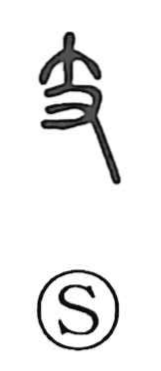

支

Kun: sasaeru | On: shi
to support ・ branch ・ to divide ・ earthly branch
Explanation
支 combines 十, a small branch, with 又, a hand. It pictures a twig held in the hand and is the earlier graph for 枝. The branch is something divided from the main trunk.
From this relation, 支 names a branch line or an offshoot: a part that separates from a larger whole. The same image can describe the branches of a family. 干支 uses the language of trunk and branches for the ten stems and twelve branches of the calendrical cycle.
A wooden branch can also serve as a prop. This gives supporting, bearing, and holding something up, as in 支持 and 支柱. Division and support both develop from the branch in the hand.